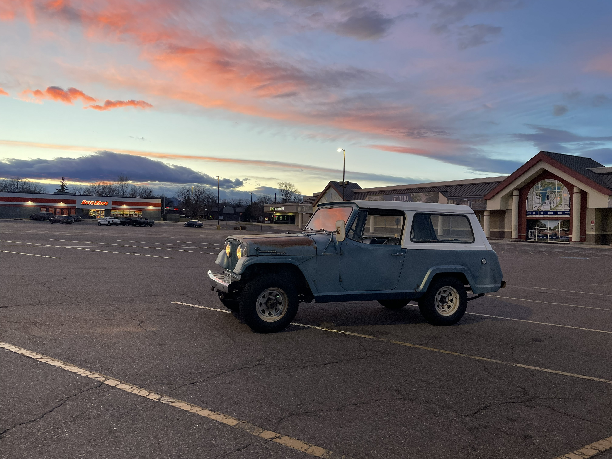
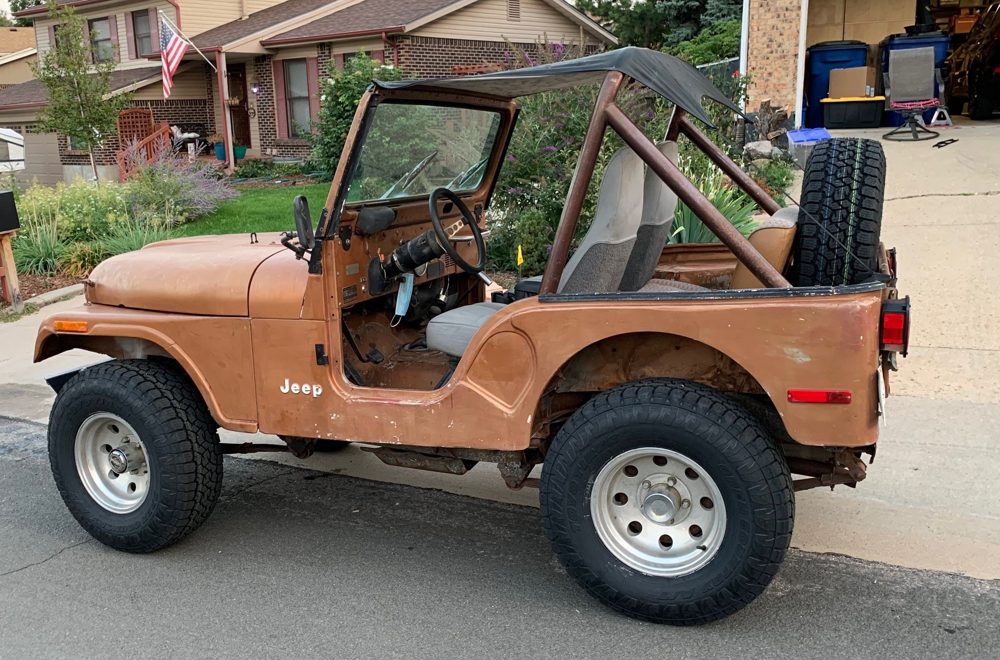

Technical Consultation
Expert guidance to help you understand your project, your options, and the best path forward before any work begins.
Technical Services & Consultation
Professional technical services for Jefferson, Gilpin, and Boulder County, CO.
Consultation, labor, project evaluation, and more — we get it done.
[My name is Tim, and I'll help get your stuck project moving again.
Moth Mods LLC provides hands-on technical expertise across a range of project types.
Examples: Off-grid battery and photovoltaic arrays, small living space construction and maintenance, vintage vehicle repair and troubleshooting, small motor repair, automotive troubleshooting and repair, automotive accessory installation, and more.
Expert guidance to help you understand your project, your options, and the best path forward before any work begins.
Skilled, reliable hands-on work carried out with attention to detail and a commitment to quality results.
Thorough assessment of your project's current state, scope, and what it will take to move it forward successfully.
Specializing in getting stalled or abandoned projects back on track — no matter how long they've been sitting.
Ongoing support and maintenance to keep your project running smoothly and prevent issues before they become problems.
A look at some of the work Moth Mods LLC has taken on — from long-dormant classics to trail-ready daily drivers.

This Olds hadn't run since 1978. After a multi-day revival and continued sustaining work, it now runs, drives, and stops. This was the owner's dream since he last drove it to prom in '78 — 46 years of being stuck, finally unstuck.



Tim's personal 1967 Jeepster Commando. Years of maintenance and upgrades keep this classic on the road. In fall 2025, Gene successfully drove 2,000+ miles from Colorado to Montana for mountain fly fishing and dirt road cruising — running the original Dauntless 225 oddfire V6 with an HEI upgrade and rebuilt Rochester 2-barrel.

This CJ5 had been rolled, rear-ended, and had a visibly out-of-square frame when the client reached out. After an evaluation and a week of intensive project revival, Tim and the client swapped the best parts of a donor Jeep with the original to create a running, driving CJ5 with a torquey 4.2L straight-6. The client now cruises in the Colorado sun.
Ready to talk about your project? Reach out and we'll get back to you promptly.
Refund & Dispute Policy: All services are quoted and agreed upon before work begins. If you are unsatisfied with completed work, please contact us within 7 days of project completion and we will work with you to resolve the issue. Refunds are evaluated on a case-by-case basis.
Cancellation Policy: Appointments and scheduled work may be cancelled or rescheduled with at least 24 hours notice at no charge. Cancellations with less than 24 hours notice may be subject to a fee equal to the cost of the scheduled time. Rescheduling within the 24 hour window will be done on a case-by-case basis.
{kind=link}
{kind=link}
{kind=link}
{kind=link}
{kind=link}
{kind=link}